xtools is a JavaScript toolkit that facilitates scripting Adobe Photoshop. Photoshop has supported scripting since version 7.0 of the product. Each new verion adds more and more capabilities for scripters. However, not all of the changes that have been made are backwards compatible. Starting with PSCS, for instance, scripters had the APIs needed to create graphical user interfaces that weren't present in PS7.
Many of the scripts in xtools support PS7, though that number is decreasing over time. It is possible, however, to write reasonably sophisticated scripts that run equally well on CS and later. Going forward, the focus will be on support the current a previous version of PS but there will not be any gratuitous backwards incompatiblity.
xtools is intended for script writers. While some of these scripts may be useful to more typical Photoshop users, that is not their intent. As such, the User Interface and documentation is less polished than it would be if it were intended for that broader audience.
This document contains installation instructions and descriptions of executable scripts. PDF documentation for stdlib.js and GenericUI.jsx are also available.
xtools v1.5 is now available. You can download it here. Thanks go out to Mike Hale for help with the documentation.
There are a couple different ways of installing XToolkit. You can:
The images captured here were from xtools with CS3 on XP. There may have been some minor changes in layout and behavior as part of the port to CS4.
As part of the installation, the XToolkit action set was installed. This set of actions contains convenient wrappers for a set of scripts that can be used directly. These script are divided into Toolkit Scripts, Demo Scripts, and Application Scripts. The remainder of the scripts are call Library Scripts and are not meant to be used directly.
The Toolkit Scripts are ones that should be of help to someone writing scripts. The would likely be of no use to typical Photoshop users. Some of these should probably be in the Demo Scripts section.
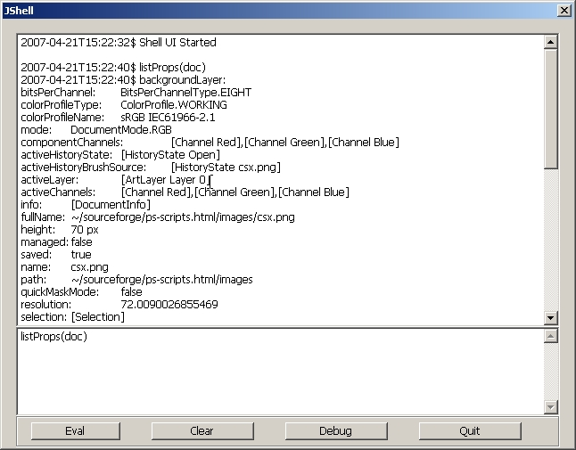
The JavaScript Shell. This script is at the top of the list for a reason. I use it more than any other script in the toolkit. jsh provides a console-like interface to Photoshop. When you launch jsh, the window above opens up. Both panels are initially empty. You type text into the lower panel, press the Eval button and the text is evaluated as a JavaScript expression. In the image above, the text 'listProps(doc)' was entered into the lower panel and the results of evaluating that expression are added to the upper panel. In this case, a function called 'listProps' returns a string containing all of the properties of the object that is passed to it.
jsh is the fastest way to test out code for Photoshop making it a great tool for experimentation. If you only use one script in xtools, make it this one.
Compatibility: CS+. There is a minor problem with multiline text widgets in ScriptUI in CS3. Pressing the Enter key never results in a newline in the text widget. The only way to get a line-break is to press Ctrl-Enter. A bug report has been filed.
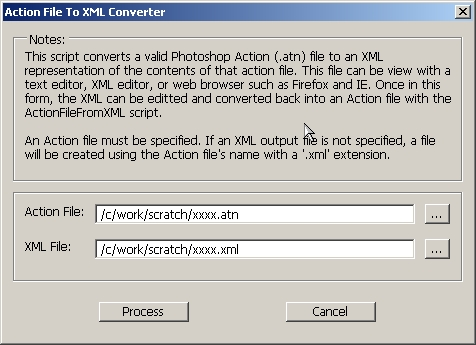
Photoshop provides the ability to get a text listing of an Action. While this is nice, it could be better. This script is better. This script translates an Action (.atn) file into an XML file. The XML that comes out is a complete and accurate description of the Actions that are in an Action file. When I say complete I mean that the XML has enough information that you can recreate the Action file from the XML. Of course, this means that you can make changes to the XML and recreate the Action file. You can, in a manner of speaking, edit an Action file with a text editor.
However, as this example shows, the XML is not necessarily pretty or easy to read. Here is what and HSL adjustment looks like:
<ActionDescriptor key="hueSaturation" count="2">
<DescValueType.BOOLEANTYPE key="1131180666" id="1131180666" symname="Colorize" sym="Clrz" boolean="false">
</DescValueType.BOOLEANTYPE>
<DescValueType.LISTTYPE key="1097099891" id="1097099891" symname="Adjustment" sym="Adjs">
<ActionList key="1097099891" id="1097099891" symname="Adjustment" sym="Adjs" count="1">
<DescValueType.OBJECTTYPE key="0" objectTypeString="HueSatAdjustmentV2" objectType="Hst2" count="3">
<ActionDescriptor key="0" count="3">
<DescValueType.INTEGERTYPE key="1210064928" id="1210064928" symname="Hue" sym="H " integer="0">
</DescValueType.INTEGERTYPE>
<DescValueType.INTEGERTYPE key="1400140404" id="1400140404" symname="Saturation" sym="Strt" integer="-27">
</DescValueType.INTEGERTYPE>
<DescValueType.INTEGERTYPE key="1281845364" id="1281845364" symname="Lightness" sym="Lght" integer="0">
</DescValueType.INTEGERTYPE>
</ActionDescriptor>
A more common use of converting an Action to and from XML would be to change the paths of documents or scripts. This example shows an Action that simply calls a script. It would be relatively easy to edit this XML so that the path reflects the new location of the script.
<Action key="2" name="ActionToJavascript" expanded="false" count="1">
<ActionItem key="TEXT" expanded="false" enabled="true" withDialog="false" dialogOptions="0" identifier="TEXT" event="AdobeScriptAutomation Scripts" name="Scripts" hasDescriptor="true">
<ActionDescriptor key="AdobeScriptAutomation Scripts" count="2">
<DescValueType.ALIASTYPE key="1785938804" id="1785938804" sym="jsCt" path="/c/work/scratch/ActionToJavascript.jsx">
</DescValueType.ALIASTYPE>
<DescValueType.STRINGTYPE key="1785941363" id="1785941363" sym="jsMs" string="ActionToJavascript.jsx">
</DescValueType.STRINGTYPE>
</ActionDescriptor>
</ActionItem>
</Action>
Compatibility: CS2+
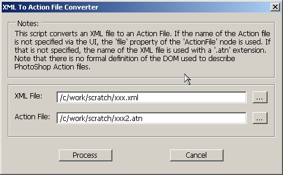
This script is the mirror of the previous one. It converts an XML file back into an Action file.
Compatibility: CS2+
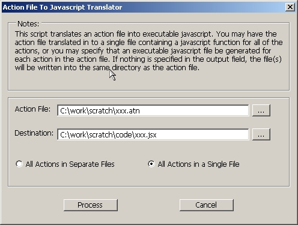
This script converts an Action file into JavaScript code. If you choose the 'Separate Files' option, a complete JavaScript file will be generated for each Action in the Action file. You can then execute those scripts from Photoshop. This particular script is really handy when you have an Action that does almost everything you want, but not quite. The option you now have is that you can create a JavaScript file and add whatever additional functionality you need. I find this useful when helping other people who have Actions that need functionality that you can only get from scripting.
Compatibility: CS2+
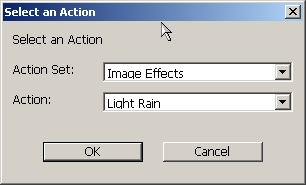
This script is like the one before except that instead of converting an entire Action file to JavaScript, it converts a single Action from the runtime Palette.
Compatibility: CS2+
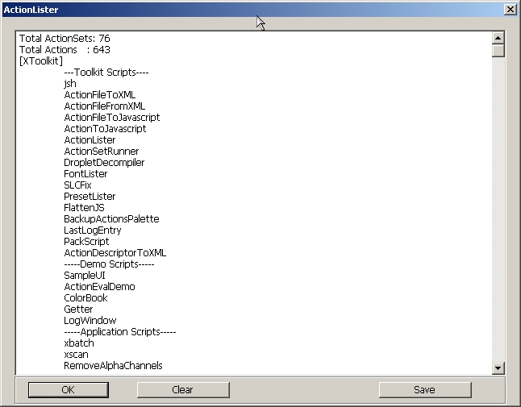
This is a rather simple script that lists the current Action Sets and Actions in the runtime Palette.
Compatibility: PS7+
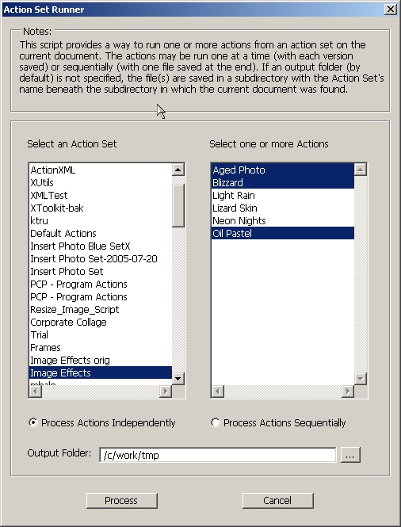
This is a rather interesting script that I wrote when I wanted to run a bunch of actions against an image. In the example above, I've selected three actions from the Image Effects action set. By default, the script will run each action against the current document. After it runs an action it saves the document off to the indicated folder. It then reverts the document and moves on to the next document. It's a great way of testing out a bunch of effects on a particular image. The script also allows you to run the all of the actions in one pass on the image. This option, however, doesn't prove to be that interesting.
Compatibility: CS2+
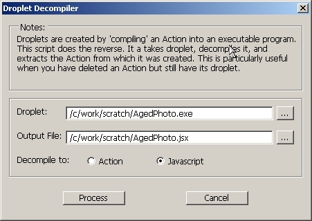
This script is one that is invaluable if you need it. It will convert a droplet back into the Action that it was generated from. And, if your like me, if you accidentally delete an Action but happen to have its droplet laying around, this will save you. You can also generate JavaScript from the droplet, which might come in handy.
Compatibility: CS2+
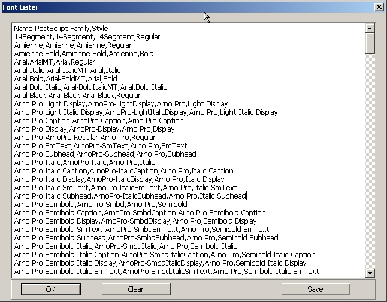
Here's a simple way to get a CSV listing of all of the fonts that Photoshop knows about.
Compatibility: CS+
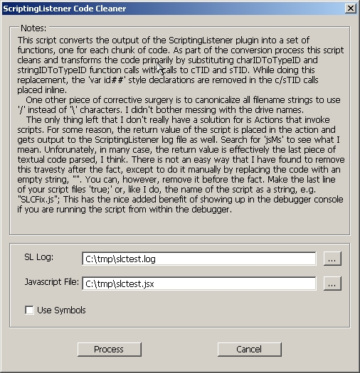
Anyone that does anything more than casual scripting with Photoshop eventually runs into the need to use the ScriptingListener plugin. This plugin writes JavaScript (and VB) code to log files as events occur in the application. The code that it generates is not very easy to understand let alone use in the context of a larger script. This script fixes that problem. It converts ScriptingListener output into a series of JavaScript functions that are easily integrated into a script.
Here's an example of the code transformation that takes place when you run this script.
This is some code written into ScriptingListenerJS.log
// =======================================================
var id344 = charIDToTypeID( "slct" );
var desc74 = new ActionDescriptor();
var id345 = charIDToTypeID( "null" );
var ref72 = new ActionReference();
var id346 = charIDToTypeID( "Lyr " );
ref72.putName( id346, "Background copy 2" );
desc74.putReference( id345, ref72 );
var id347 = stringIDToTypeID( "selectionModifier" );
var id348 = stringIDToTypeID( "selectionModifierType" );
var id349 = stringIDToTypeID( "addToSelection" );
desc74.putEnumerated( id347, id348, id349 );
var id350 = charIDToTypeID( "MkVs" );
desc74.putBoolean( id350, false );
executeAction( id344, desc74, DialogModes.NO );
// =======================================================
var id351 = charIDToTypeID( "Dlt " );
var desc75 = new ActionDescriptor();
var id352 = charIDToTypeID( "null" );
var ref73 = new ActionReference();
var id353 = charIDToTypeID( "Lyr " );
var id354 = charIDToTypeID( "Ordn" );
var id355 = charIDToTypeID( "Trgt" );
ref73.putEnumerated( id353, id354, id355 );
desc75.putReference( id352, ref73 );
executeAction( id351, desc75, DialogModes.NO );
And here is what this code becomes when this script is run:
function ftn1() {
// =======================================================
var desc74 = new ActionDescriptor();
var ref72 = new ActionReference();
ref72.putName( cTID('Lyr '), "Background copy 2" );
desc74.putReference( cTID('null'), ref72 );
desc74.putEnumerated( sTID('selectionModifier'), sTID('selectionModifierType'), sTID('addToSelection') );
desc74.putBoolean( cTID('MkVs'), false );
executeAction( cTID('slct'), desc74, DialogModes.NO );
};
// =======================================================
function ftn2() {
var desc75 = new ActionDescriptor();
var ref73 = new ActionReference();
ref73.putEnumerated( cTID('Lyr '), cTID('Ordn'), cTID('Trgt') );
desc75.putReference( cTID('null'), ref73 );
executeAction( cTID('Dlt '), desc75, DialogModes.NO );
};
While still somewhat enigmatic, this code is significantly easier to read after the transformation.
Compatibility: PS7+
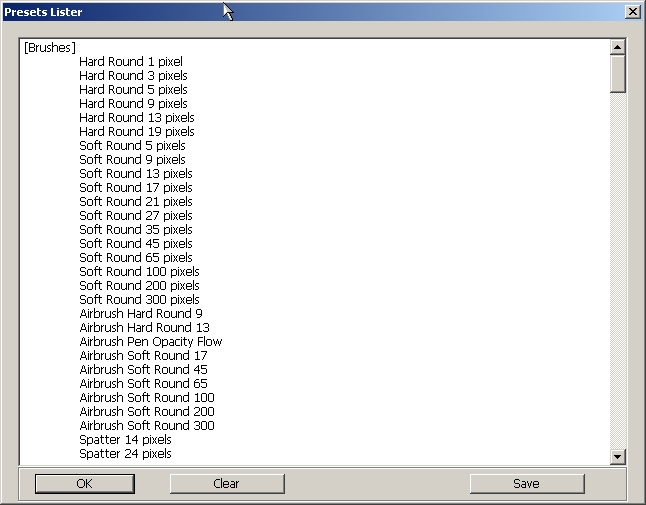
Here's another simple script that just lists out all of the presets. The list of presets probably not all that useful. The code that shows how to get the lists of presets, on the otherhand...
Compatibility: PS7+
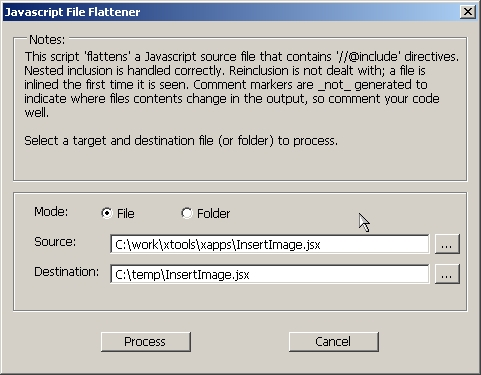
The JavaScript implementaion used in Adobe products has a feature that allows one file to be 'included' in another. What this means is that when the interpreter runs across a line in a JavaScript file that looks like this:
//@include "stdlib.js"
the interepreter will read the contents of the file stdlib.js as if they had been copied in. This makes it easier to write resuable script components. For instance, in this toolkit there are several scripts that deal with handling Actions. When it comes time to write a new script, that script just includes the reusable Action scripts instead of having to copy the contents into the new file.
This presents problems when sending a copy of a script to someone else. Since they may not have the same include files laying around, it's best if you just send a single file with everything in it. That's what this script does. When you run this script, you specifiy the top-level file. FlattenJS will read that file and, wherever it finds an include file, it will read in the contents of that file. The end result is that instead of a 100 line script with a couple of include files, you might end up with a script that's several thousand lines long.
In xtools, the xtools/xapps contains a set of top-level script files. The folder xtools/app contains the same scripts in flattened form. If you want to send a script from xtools to somebody, you would typically want to send them the xtools/apps version of the file.
Compatibility: CS+
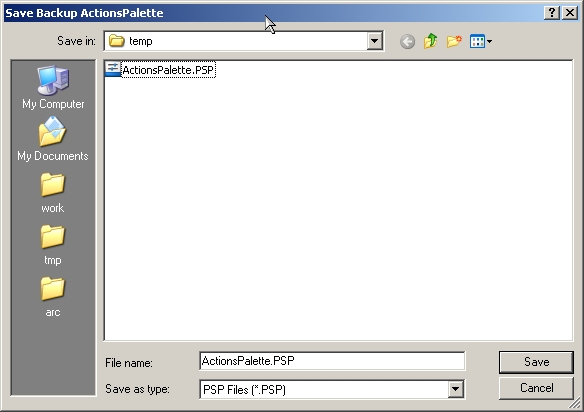
I've damaged my Actions Palette more times than I care to remember. So I wrote this script to backup the Actions Palette. Since this is reading the palette from your hard drive, it save the palette as it was when you started you current Photoshop session.
Compatibility: CS2+
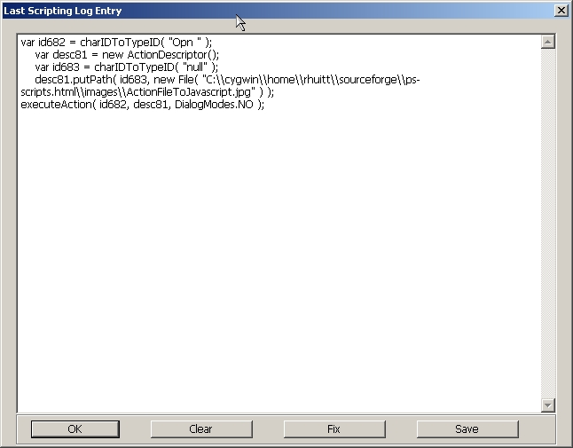
Since much of Photoshop's functionality is only available via Action Manager/ScriptingListener code I wrote this script. The idea is that when you need to know how to call something from JavaScript, you do whatever it is in Photoshop (like, open a file), then run this script. This script displays the last entry in the ScriptingListener log. Very handy. And, if you don't like the way the code looks, you can hit the Fix button and the code is automatically run through the SLCFix script. You can then copy and paste it into your script.
Compatibility: CS+
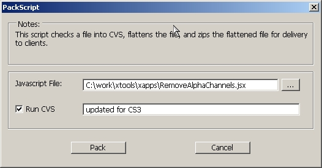
This script will probably be of no use to anyone out there except me. I write a lot of scripts for a lot of people. As part of being a good little software engineer, I use a version control system for my scripts called CVS. CVS let's you keep a history of versions of files and I've used it on ealmost very significant project I've been involved with.
When I have finished a script and I'm ready to send it out to somebody, I go through the following steps:
Doing this manually got to be a bit tedious. So I wrote this script which automates the whole process. All I have to do is specify the script I want to package up and a comment for CVS. I use this nearly every day along with jsh and LastLogEntry.
Compatibility: CS2+
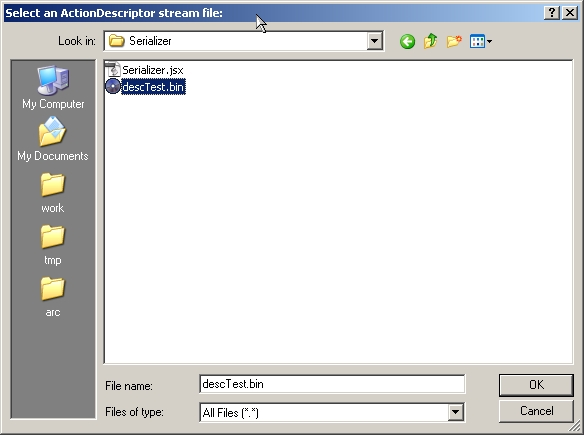
Low-level programming in the Photoshop world means Action Manager programming. This can be a painful and tediuos process. This script helps out. Since Action Manager programming means working with ActionDescriptor objects, it's helpful to know what's in an ActionDescriptor. If you are able to save an ActionDescriptor to disk, this script will let you read that file and convert it to XML. You can then open up the descriptor in a web browser or some other XML reader and get a nice structured view of the contents of the ActionDescriptor.
Compatibility: CS2+
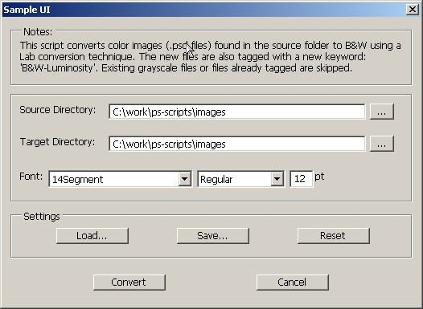
One of the most heavily re-used components in the toolkit is GenericUI.jsx, a script/framework simpilfies the task of creating a user interface in JavaScript.
This script is built on GenericUI. It converts a color image to a black and white using a Lab conversion technique. I got the conversion code from Trevor Morris and put a UI on the front of it.
This UI also illustrates a couple of components that come with the framework. The first is a Font selector widget. The second is the Settings panel. As with other scripts, the interesting stuff is in the code not in the UI.
Compatibility: CS+
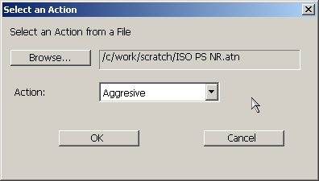
This script reads an Action from an Action file and executes the steps in the action one at a time in JavaScript. This may not sound like something useful, but it makes it possible to call an action from a script that, in turn, calls another script. This capability does not exist in any version of Photoshop before CS3. There are a lot of other things that become possible such as having JavaScript embedded in an Action. This is just the tip of the iceberg.
Compatibility: CS2+
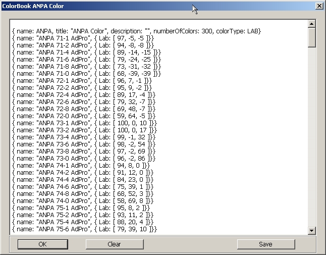
This demo lets you select a ColorBook file and displays the contents of that file in great detail. The underlying code is a good example of how to read binary data files using the Stream script.
Compatibility: PS7+

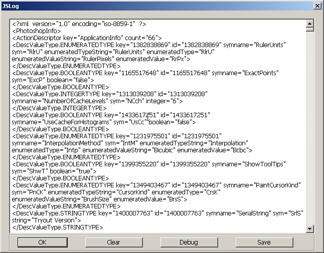
This script is another invaluable tool for people doing Action Manager programming. With this, you can read Action Descriptors containing various kinds of information about objects in Photoshop. The Action Descriptors are converted to XML to make reading them significantly easier. Using this tool, I along with Mike Hale and others can now do things in JavaScript that had previously only been possible in plugins. There are limitations to what is possible in JavaScript but this script does a lot towards finding out what those boundaries actually are.
Compatibility: CS2+
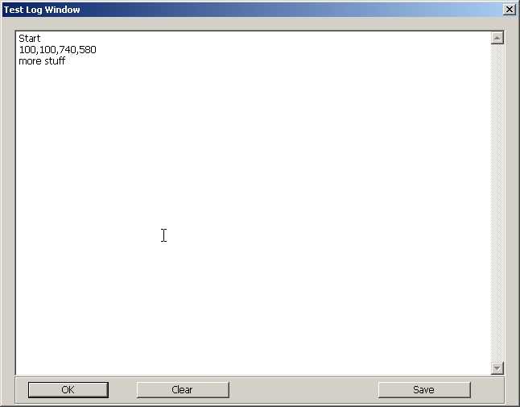
The LogWindow component is used quite a bit by other scripts in the toolkit. This is the code for displaying this window:
var logwin = new LogWindow('Test Log Window');
logwin.append('Start');
logwin.append(logwin.bounds);
Compatibility: CS+
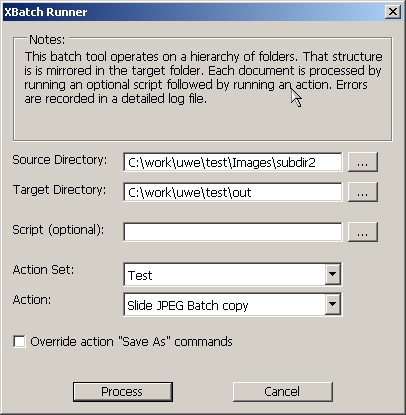
xbatch is a script that I wrote with Uwe Steinmueller over at Digital Outback Photo. It works like the native Batch facilities in Photoshop except that the folder structure of the source images is duplicated in the targer directory. Plus, you can specify a script that gets run before the Action.
For more information on this script checkout this article.
Compatibility: CS2+
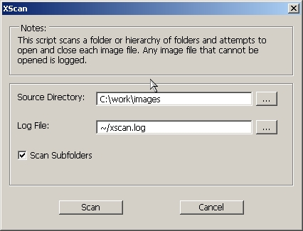
xbatch is another script that I wrote with Uwe Steinmueller. This script looks a a folder full of images and opens and closes each one in turn. The purpose is to quickly locate possible corrupt images. Uwe also wrote an article for this script.
Compatibility: CS+
The rest of these scripts do not have a User Interface.
This is a simple little script that removes all of the alpha channels in the current document.
Compatibility: PS7+
There are hundreds of actions and scripts out there that add some kind of watermark to a document. This is one of the ones that I wrote and it the one that I currently use.
Compatibility: CS+
This script automatically adjusts the composite level in a document by trimming the histogram tails. The amount that is trimmed is configurable.
Compatibility: PS7+
This script automatically adjusts the component RGB levels in a document by trimming the histogram tails. The amount that is trimmed is configurable.
Compatibility: PS7+
This script imports jpegs of questionable quality into my workflows. Various formats are saved of for different future uses.
Compatibility: PS7+
This is another script that imports images into my workflow. This does auto-level adjustment and noise reduction.
Compatibility: PS7+
The toolkit contains a set of resizing routine in ResizeImage.js. This script calls one of them to resize the current image.
Compatibility: PS7+
This is a basic script for updating a set of metadata fields in an object.
Compatibility: PS7+
I've run into a lot of people that want to insert images into a template. I wrote this in response to that need. When this script runs, it checks to see if the layer has 'Image' in its name, if it has a layer mask, and if it's a normal content layer. If so, it prompts for an image file. The selected image is then inserted into the document using the layer mask to determine location and size.
Compatibility: CS2+
xbytor@gmail.com This software is licensed under the CC-GNU LGPL.
This software is licensed under the CC-GNU LGPL.